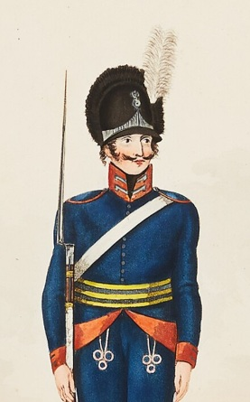

Maria Lena Hemmingsdotter.

Född 24 apr 1787 i Skravestad, Örtomta (E) 24 .
Död 3 sep 1838 i Flåtmossen, Skörtinge, Skärkind (E) 25 .
|
Född
25 sep 1763
i Östra Ryd (E)
1
.
Död 9 sep 1832 i Grindstugan, Spolstad, Gårdeby (E) 2 . |
 |
|
Sven Svensson Blid
Född 25 sep 1763 i Östra Ryd (E) 1 . Död 9 sep 1832 i Grindstugan, Spolstad, Gårdeby (E) 2 . |
|||
|
Gift
4 sep 1791
i Gistad (E)
20
.
Stina Andersdotter. Född 7 apr 1764 i Dyckstorp, Äleby, Gistad (E) 21 . Död 18 jan 1811 i Vallby, Kimstad (E) 22 . |
|
Gift
27 sep 1811
i Kimstad (E)
23
.
Maria Lena Hemmingsdotter.
Född 24 apr 1787 i Skravestad, Örtomta (E) 24 . Död 3 sep 1838 i Flåtmossen, Skörtinge, Skärkind (E) 25 . |
Framställd 6 nov 2026 med hjälp av Disgen version 2025.